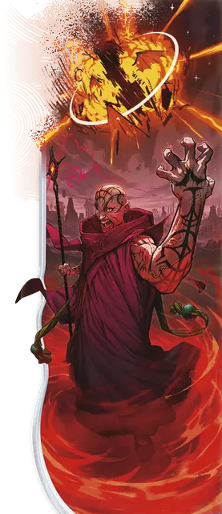

Детонация
Detonate
9 уровень, Воплощение

Время сотворения Действие
Дистанция 500 футов
Компоненты В, С, М (трут)
Длительность Мгновенная
Классы Волшебник, Колдун, Чародей
Вы сотворяете крупицу взрывоопасной магической энергии внутри существа, которое видите в пределах дистанции. Цель совершает спасбросок Телосложения, при провале получая 10к10 урона Огнём, а при успехе только половину этого урона.
Затем от цели разносится взрывная волна. Все существа (за исключением самой цели) в 60-футовой Эманации, исходящей от цели, совершают спасбросок Ловкости — с Помехой, если это заклинание опустило Хиты изначальной цели до 0. Существо получает 10к10 урона Огнём при провале и только половину этого урона при успехе.
Находящиеся в области Эманации объекты, которые никто не несёт и не носит, также получают урон и, если они воспламеняющиеся, начинают гореть.